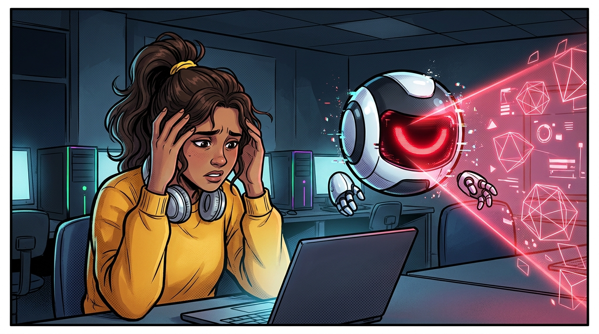
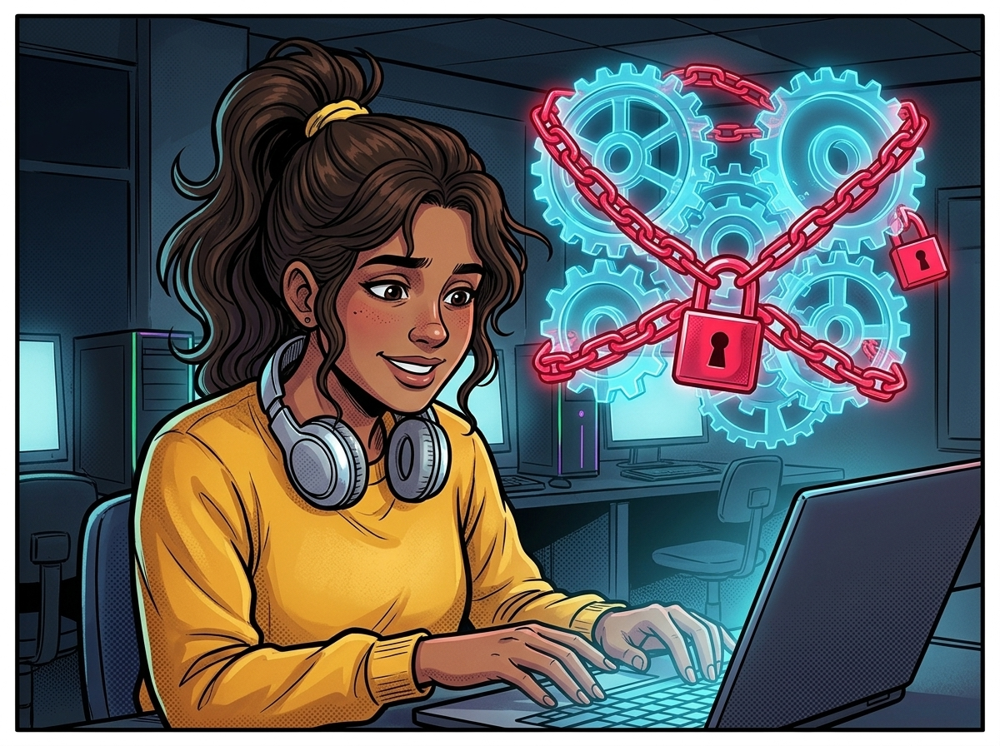
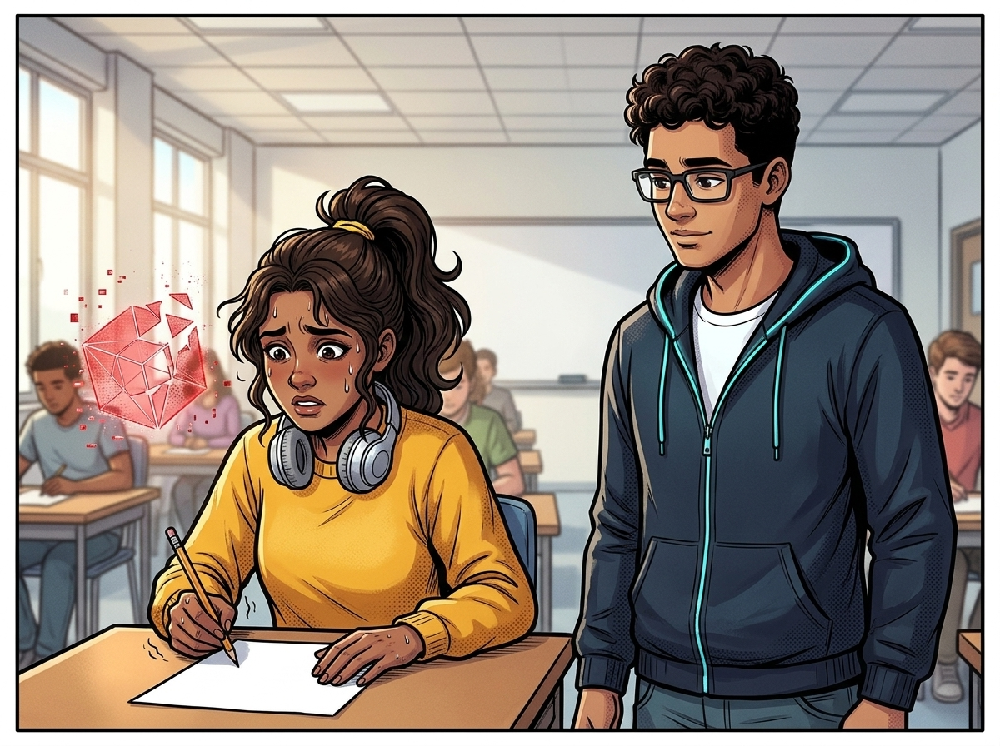
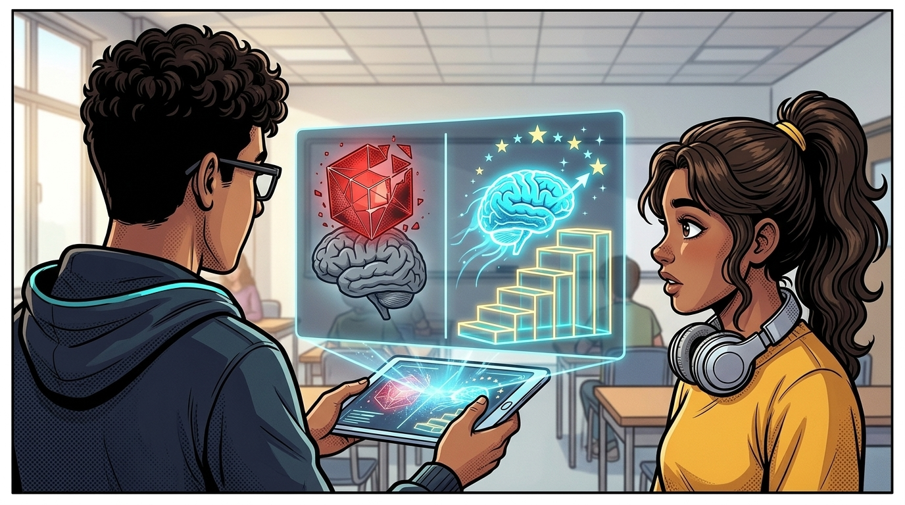
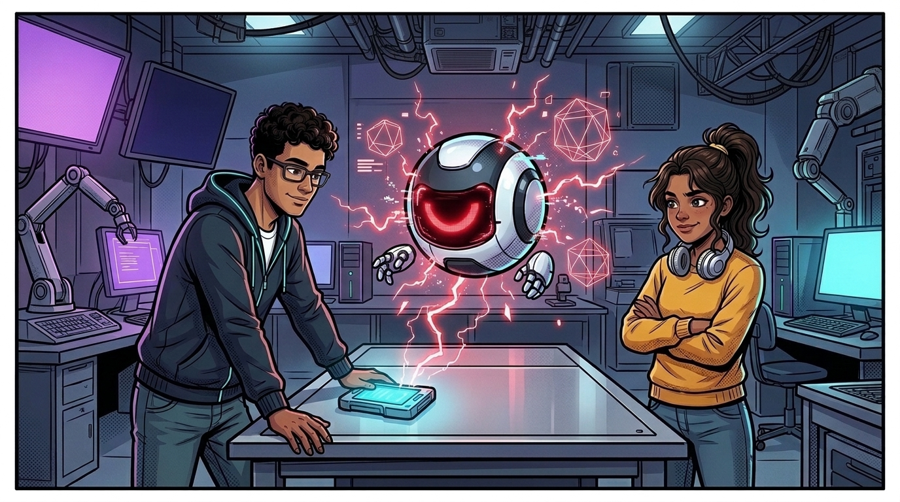

A ARMADILHA DA RESPOSTA PRONTA (E A ILUSÃO DE COMPETÊNCIA)
OPERAÇÃO BYTE SOCRÁTICO · UFRPE

LAB. DA UFRPE · 23H40 · VÉSPERA DA ENTREGA DE PYTHON
CLARA
Socorro, Byte! Meu laço while travou tudo! Só me dá o código pronto pra eu entregar logo!
BYTE v1.0 [SEM FILTRO]
> PEDIDO ACEITO! Gerando 100% da solução final. Copie e cole agora!
ZAP-DUMP!

ATALHO COGNITIVO: NOTA 10 NA TAREFA... ZERO ESFORÇO MENTAL.
TRAVADO!
PENSAMENTO DE CLARA
"Ufa! Rodou de primeira no Ctrl+C e Ctrl+V! Nem precisei quebrar a cabeça..."

NO DIA SEGUINTE: PROVA PRÁTICA SEM IA.
CLARA Deu branco total! Sem o Byte pra fazer por mim, não sei nem começar!
CAUÃ (MONITOR)
Calma, Clara. Isso é a Ilusão de Competência: o Byte v1.0 fez a tarefa, mas sabotou seu treino.

DADO REAL (OCDE · PISA, 2026): 46% DOS ALUNOS USAM CHATBOTS TODA SEMANA. MAS COPIAR ≠ APRENDER!
ORÁCULO PASSIVO
ANDAIMAGEM ATIVA!
CAUÃ
Ver o código pronto apaga o cérebro. Um Tutor Socrático usa Andaimagem (Scaffolding): dá pistas graduais e faz perguntas para você construir a lógica!

CAUÃ
Chega de "Oráculo de Cola"! Vamos auditar o Byte v1.0 na nossa Arena de Testes com uma régua científica!
BZZT-GLITCH!
CLARA
Fechado, Cauã! Mas como a gente mede na prática se uma IA sabe mesmo ensinar?
CONTINUA NO CAPÍTULO 02: A RÉGUA DOS 4 CRITÉRIOS PEDAGÓGICOS